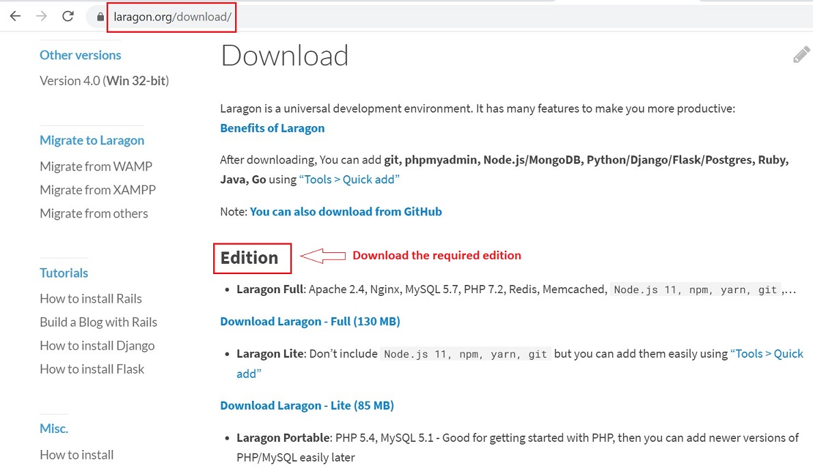
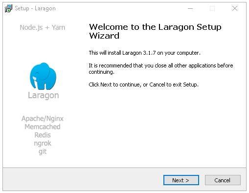
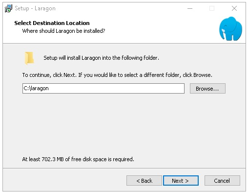
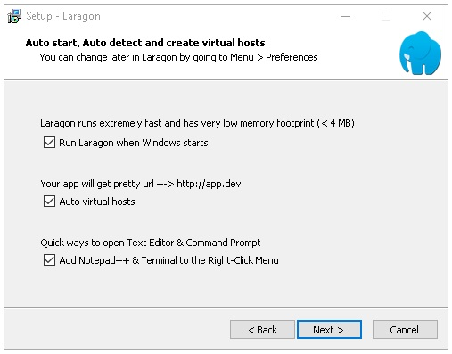
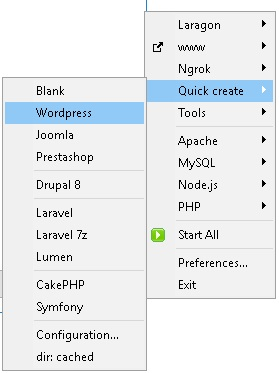
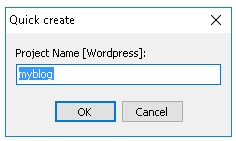
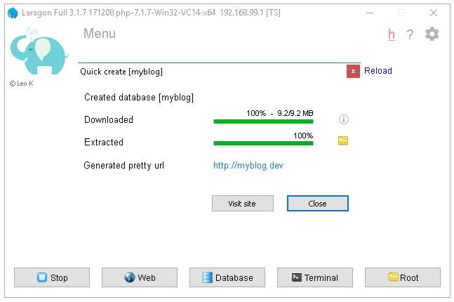

Development Environment Setup for theme development¶
 This documentation is for the Windows user only.
This documentation is for the Windows user only.
In this section of the manual, we will learn the steps to setup environment for theme development.
Install Laragon Software¶
Laragon is a portable, isolated, fast & powerful universal development environment for PHP, Node.js, Python, Java, Go, Ruby. It is fast, lightweight, easy-to-use and easy-to-extend.
Laragon is great for building and managing modern web applications. It is focused on performance - designed around stability, simplicity, flexibility and freedom.
Below, we will see steps to install. setup and use Laragon.
Download Laragon¶
To start the journey with Laragon, just download the latest version and click Next, Next, Next...

Setup Guide¶
Below are the setup steps:
Setup - Welcome Page¶

Setup - Select Location¶

Setup - Options¶

Getting Started¶
Below are steps to have a Wordpress CMS in a few minutes:
-
Start Laragon, then cick -> Start All

-
Click Menu -> Quick app -> Wordpress, type a name - such myblog

-
Laragon will display a Window and:
- Create correspond database: myblog
- Download the latest version of Wordpress
- Extract the code to C:\laragon\www\myblog
- Generate correspond pretty URL:
- http://myblog.test

Create a Local copy of the Website¶
New Website¶
Create a new wordpress site :Eg. client.test using quick app - Follow the Link for steps.
Existing Website¶
To create a local copy of an existing website, follow below steps:
- Create a new wordpress site :Eg. Existing client.test using quick app - as discussed in New Website above.
- Now, go to the already live version of the website eg. live.com
- Use duplicator plugin to create a backup of the site. You can read about the steps in here
- Once you have backup files, replace the wordpress files from exsitingclient.test with these backup file
- Visit oldclient.test/installer.php to start restore the website.
- Use your database credentials when asked and follow the steps.
-
Once setup, make sure to do the following:
- Remove all the Social Media Tracking code from plugin or theme
- Facebook Analytics
- Google Analytics
- Any other
- Use Disable Emails plugin to disable all outgoing emails.
- Remove all the Social Media Tracking code from plugin or theme
Setup Theme¶
New Website¶
- We use sage as our starter theme.
- Install the theme in the themes directory.
- Create a github private repository inside our organization.
- Repository name should be set as project-name-theme
- Push all the initial code to the remote repository.
Existing Website¶
- Clone the client's theme from github to your theme folder.
- Run composer and yarn - you can start working on the theme.
- You are advised to work on a new branch when a new feature is being created.
Deploying Integration: Setup¶
- We use github actions to deploy changes to a particular server eg. Live, staging.
- You can setup the deployment integration by reading this article.